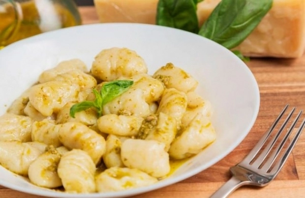

Las mejores recetas para homenajear a tus seres queridos.
RECETA DE ÑOQUIS DE RICOTA

Ingredientes
Ricota, 1/2 Kg.
Huevos, 2.
Queso rallado, 100 gr.
Harina leudante, 350 gr.
Sal y pimienta, a gusto.
Preparación
Mezclar en un bol la ricotta con los huevos, condimentar con la sal, un poco de pimienta y la mitad del queso rallado. Agregar la harina y amasar.
Separar en bollos, dar forma de cilindro, cortar pequeñas porciones y pasar por la tablita ranurada para darles la forma de ñoquis.
Colocar en una cacerola con abundante agua hirviendo con sal, retirar con espumadera una vez que suben a la superficie. Servir con salsa caliente y el queso rallado restante.